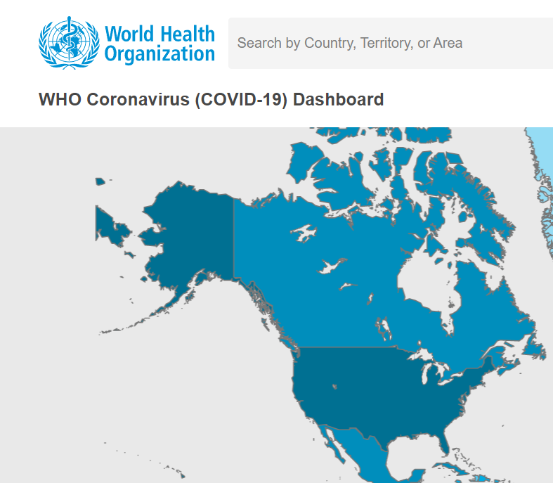

<!DOCTYPE html>
<html xmlns="http://www.w3.org/1999/xhtml"></html>
<head>
    <meta http-equiv="Content-Type" content="text/html; charset=utf-8" />
    <meta name="viewport" content="width=device-width,initial-scale=1.0">
    <title>COVID-19</title>
    <link rel="stylesheet" type="text/css" href="style.css">
    <script type="application/javascript">

        function blink()
        {
        //定義圖片的顯示和隱藏屬性
        tp.style.visibility = (tp.style.visibility=="hidden")?"visible":"hidden";  
        //每0.5秒刷新一次
        setTimeout("blink()",300);
        }

        function timeout()
        {
        //定義圖片的顯示和隱藏屬性
        tp.style.visibility = (tp.style.visibility=="hidden")?"visible":"hidden";  
        //每0.5秒刷新一次
        setTimeout("blink()",300);
        }
        </script>
</head>
<body style="background-color: #2b343b;">
    <p class="tackop"><h1 class="tackop"><a href="https://www.youtube.com/watch?v=dQw4w9WgXcQ" style="text-decoration:none; left: 19%; top: 18%; color: white; position: absolute;" target="_blank" >網站介紹</a></h1></p>
    <p class="window" style="left: 10%;top: 15%; border-radius: 5%;">
        <h1 style="color: white; position: absolute ; left: 30%; top: 25%;"><a href="https://www.who.int/emergencies/diseases/novel-coronavirus-2019" style="text-decoration: none; color: white;">
            Information on COVID-19, the infectious disease caused by the most recently discovered coronavirus.
            </a>
        </h1>
    </p>
    <p class="window" style="border-radius: 5%; top: 60%; left: 80%;">
        <h1 style="color: white; position: absolute; top: 75%; left: 25%;">
            <a href="https://www.cdc.gov.tw/" style="color: white; text-decoration: none;">
                衛生福利部疾病管制署，簡稱疾病管制署、疾管署或英語簡寫CDC，<br>
                是中華民國衛生福利部的下轄機關，主責國家現代化防疫體系。
            </a>
        </h1>
    </p>
    <div class="navigation" style="position: absolute; top: 0; left: 0; height: 1080px;">
        <ul>
            <li class="list">
                <a href="index.html">
                    <span class="icom"><ion-icon name="home-outline"></ion-icon></span>
                    <span class="list">Home</span>
                </a>
            </li>
            <li class="list">
                <a href="originOf.html">
                    <span class="icom"><ion-icon name="skull-outline"></ion-icon></span>
                    <span class="list">Origin of COVID-19</span>
                </a>
            </li>
            <li class="list active">
                <a href="web.html">
                    <span class="icom"><ion-icon name="browsers-outline"></ion-icon></span>
                    <span class="list">Website</span>
                </a>
            </li>
            <li class="list">
                <a href="help.html">
                    <span class="icom"><ion-icon name="information-circle-outline"></ion-icon></span>
                    <span class="list">Help</span>
                </a>
            </li>
            <li class="list">
                <a href="about.html">
                    <span class="icom"><ion-icon name="people-outline"></ion-icon></span>
                    <span class="list">About us</span>
                </a>
            </li>
            <li class="list">
                <a href="fbpage.html">
                    <span class="icom"><ion-icon name="thumbs-up-outline"></ion-icon></span>
                    <span class="list">Like us</span>
                </a>
            </li>
        </ul>
    </div>
    <script type="module" src="https://unpkg.com/ionicons@5.5.2/dist/ionicons/ionicons.esm.js"></script>
    <script nomodule src="https://unpkg.com/ionicons@5.5.2/dist/ionicons/ionicons.js"></script>
<script>
    //add active class in selected tab
    const list = document.querySelectorAll('.list');
    function activeLink(){
        list.forEach((item)=>
        item.classList.remove('active'));
        this.classList.add('active');
    }
    list.forEach((item)=>
    item.addEventListener('click',activeLink));
</script>
</body>